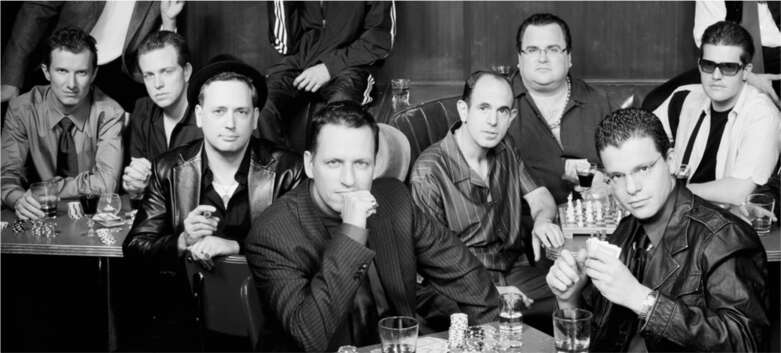
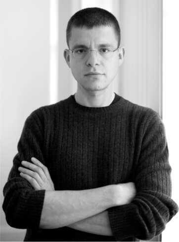
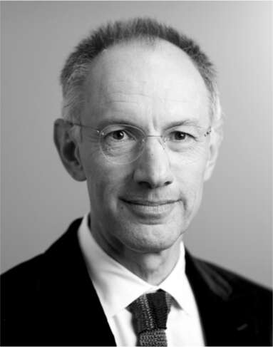

Cuộc chiến đường phố
Đến cuối mùa hè năm 2000, Levchin thấy Musk ngày càng khó làm việc cùng. Anh đã viết cho Musk những bản ghi nhớ dài outlining cách thức gian lận đang đe dọa phá sản công ty (một trong số đó có tiêu đề kỳ lạ là “Gian Lận Là Tình Yêu”), nhưng tất cả những gì anh nhận được là sự bác bỏ ngắn gọn. Khi Levchin phát triển ứng dụng thương mại đầu tiên của công nghệ CAPTCHA để ngăn chặn gian lận tự động, Musk tỏ ra không mấy quan tâm. “Điều đó đã ảnh hưởng tiêu cực đến tôi,” Levchin nói. Anh gọi cho bạn gái và nói: “Anh nghĩ anh xong rồi.”
Ngồi tại sảnh của một khách sạn ở Palo Alto, nơi ông đang tham dự một hội nghị, Levchin nói với vài đồng nghiệp về kế hoạch rời đi của mình. Họ thúc giục ông nên đấu tranh. Những người khác cũng có sự bất mãn tương tự. Peter Thiel và Luke Nosek, bạn thân của ông, đã bí mật thực hiện một nghiên cứu cho thấy thương hiệu PayPal có giá trị hơn nhiều so với X.com. Musk rất tức giận và ra lệnh gỡ bỏ thương hiệu PayPal khỏi hầu hết trang web của công ty. Đến đầu tháng 9, cả ba người, cùng với Reid Hoffman và David Sacks, đã quyết định rằng đã đến lúc phế truất Musk.
Musk đã kết hôn với Justine tám tháng trước đó, nhưng anh vẫn chưa có thời gian để đi hưởng tuần trăng mật. Định mệnh thay, anh quyết định đi vào tháng 9 đó, đúng lúc các đồng nghiệp đang âm mưu chống lại anh. Anh bay đến Úc để tham dự Thế vận hội, ghé qua London và Singapore để gặp gỡ các nhà đầu tư tiềm năng.
Ngay khi anh rời đi, Levchin đã gọi điện cho Thiel và hỏi liệu ông có quay lại làm CEO hay không, ít nhất là tạm thời. Khi Thiel đồng ý, nhóm phản loạn đã bắt tay nhau đối đầu với hội đồng quản trị, kêu gọi các nhân viên khác ký vào bản kiến nghị ủng hộ họ.
Được trang bị và củng cố như vậy, Thiel, Levchin và những người đồng chí của họ đã đến văn phòng của Sequoia Capital trên đường Sand Hill để trình bày trường hợp của mình với Michael Moritz. Moritz lật giở tập tài liệu kiến nghị, sau đó hỏi một số câu hỏi cụ thể về phần mềm và các vấn đề gian lận. Ông đồng ý rằng cần phải thay đổi, nhưng nói rằng ông sẽ chỉ ủng hộ Thiel làm CEO tạm thời; công ty cần bắt đầu quá trình tuyển dụng một giám đốc điều hành cấp cao giàu kinh nghiệm. Những người âm mưu đồng ý và đi đến một quán bar địa phương, Antonio’s Nut House, để ăn mừng.
Musk bắt đầu cảm thấy có vấn đề trong một số cuộc gọi từ Úc. Như thường lệ, anh đưa ra các quyết định chỉ huy, nhưng giờ đây, những người cấp dưới thường xuyên sợ hãi bắt đầu phản kháng. Anh nhận ra lý do bốn ngày sau chuyến đi, khi anh được gửi một email do một nhân viên gửi cho hội đồng quản trị ca ngợi sự lãnh đạo của Musk và tố cáo những kẻ âm mưu. Musk cảm thấy bị đánh úp. "Toàn bộ chuyện này khiến tôi rất buồn đến nỗi không nói nên lời," anh viết email. "Tôi đã dốc hết sức lực, gần như tất cả số tiền mặt từ Zip2 và đặt cuộc hôn nhân của mình vào tình thế khó khăn, vậy mà tôi lại bị buộc tội làm những việc xấu mà tôi thậm chí còn chưa có cơ hội để phản hồi."
Musk gọi cho Moritz để cố gắng đảo ngược quyết định của ông. "Ông ấy mô tả cuộc đảo chính là 'tàn bạo'," Moritz, người có óc văn chương tinh tế, nói. "Tôi nhớ, vì hầu hết mọi người không dùng từ này. Ông ấy gọi đó là một tội ác tàn bạo." Khi Moritz từ chối lùi bước, Musk nhanh chóng mua vé máy bay—chỉ còn chỗ ngồi hạng phổ thông cho anh và Justine—và quay trở về nhà. Khi trở lại văn phòng X.com, anh đã họp với một số người trung thành để tìm cách chống lại cuộc đảo chính. Sau một buổi họp kéo dài đến tận khuya, anh lui về phía máy chơi game trong văn phòng và tự mình chơi hết vòng này đến vòng khác của Street Fighter.
Thiel cảnh báo các giám đốc điều hành không nên trả lời các cuộc gọi của Musk; anh ta có thể quá thuyết phục hoặc đáng sợ. Nhưng Reid Hoffman, giám đốc điều hành, cảm thấy mình nợ Musk một cuộc trò chuyện. Là một doanh nhân to lớn với tính cách vui vẻ, Hoffman biết rõ mưu mẹo của Musk. "Anh ấy có sức mạnh bóp méo hiện thực, nơi mọi người bị cuốn vào tầm nhìn của anh ấy," ông nói. Tuy nhiên, ông quyết định gặp Musk để ăn trưa.
Bữa trưa kéo dài ba tiếng đồng hồ khi Musk cố gắng thuyết phục Hoffman. "Tôi đã dồn hết tiền bạc vào công ty này," anh nói. "Tôi có quyền điều hành nó." Anh cũng phản đối chiến lược chỉ tập trung vào thanh toán điện tử. "Đó chỉ nên là bước khởi đầu cho việc tạo ra một ngân hàng kỹ thuật số thực sự." Anh đã đọc cuốn sách "The Innovator’s Dilemma" của Clayton Christensen và cố gắng thuyết phục Hoffman rằng ngành ngân hàng trì trệ có thể bị phá vỡ. Hoffman không đồng ý. "Tôi nói với anh ấy rằng tôi tin tầm nhìn về một siêu ngân hàng của anh ấy là độc hại, bởi vì chúng ta cần tập trung vào dịch vụ thanh toán trên eBay," Hoffman nói. Musk sau đó chuyển hướng: anh cố gắng thuyết phục Hoffman trở thành CEO. Mong muốn kết thúc bữa trưa, Hoffman đồng ý suy nghĩ về điều đó, nhưng nhanh chóng quyết định anh không quan tâm. Anh là người trung thành với Thiel.
Khi hội đồng quản trị bỏ phiếu loại bỏ Musk khỏi vị trí CEO, anh phản ứng với sự bình tĩnh và thái độ lịch sự khiến những người đã chứng kiến cuộc đấu tranh quyết liệt của anh để giành chiến thắng ngạc nhiên. "Tôi đã quyết định rằng đã đến lúc đưa một CEO dày dạn kinh nghiệm vào để đưa X.com lên tầm cao mới," anh viết trong email gửi đồng nghiệp. "Sau khi tìm kiếm xong, tôi dự định nghỉ phép khoảng ba đến bốn tháng, suy nghĩ kỹ một vài ý tưởng, rồi bắt đầu một công ty mới."
Mặc dù là một người chiến đấu mạnh mẽ, Musk lại có một khả năng bất ngờ là thực tế khi thất bại. Khi Jeremy Stoppelman, một người theo Musk, sau này là người sáng lập Yelp, hỏi liệu anh và những người khác có nên từ chức để phản đối hay không, Musk nói không. "Công ty là đứa con của tôi, và giống như người mẹ trong Sách Solomon, tôi sẵn sàng từ bỏ nó để nó có thể tồn tại," Musk nói. "Tôi quyết định nỗ lực hàn gắn mối quan hệ với Peter và Max."
Vấn đề căng thẳng còn lại duy nhất là mong muốn của Musk, như anh ấy đã nói trong email của mình, là "làm một chút PR." Anh ấy đã bị cuốn hút bởi sự nổi tiếng, và anh ấy muốn trở thành gương mặt đại diện của công ty. "Tôi thực sự là người phát ngôn tốt nhất cho công ty," anh nói với Thiel trong một cuộc họp căng thẳng tại văn phòng của Moritz. Khi Thiel bác bỏ ý tưởng này, Musk đã nổi giận. "Tôi không muốn danh dự của mình bị xúc phạm," anh hét lên. "Danh dự của tôi còn đáng giá hơn công ty này đối với tôi." Thiel không hiểu tại sao đây lại là vấn đề danh dự. "Anh ấy rất kịch tính," Thiel nhớ lại. "Mọi người thường không nói chuyện với kiểu hào hùng, gần như kiểu Homeric ở Thung lũng Silicon." Musk vẫn là cổ đông lớn nhất và là thành viên hội đồng quản trị, nhưng Thiel cấm anh phát ngôn cho công ty.
Lần thứ hai trong ba năm, Musk bị đẩy ra khỏi một công ty. Anh là một người có tầm nhìn xa nhưng không giỏi làm việc nhóm.
Điều gây ấn tượng với các đồng nghiệp của anh tại PayPal, ngoài phong cách cá nhân quyết liệt và thẳng thắn, là sự sẵn sàng, thậm chí là mong muốn, chấp nhận rủi ro của anh. "Các doanh nhân thực sự không phải là những người ưa mạo hiểm," Roelof Botha nói. "Họ là những người giảm thiểu rủi ro. Họ không phát triển mạnh nhờ rủi ro, họ không bao giờ tìm cách khuếch đại nó, thay vào đó họ cố gắng tìm ra các biến số có thể kiểm soát và giảm thiểu rủi ro của họ." Nhưng Musk thì không. "Anh ấy thích khuếch đại rủi ro và đốt thuyền để chúng tôi không bao giờ có thể rút lui." Đối với Botha, vụ tai nạn McLaren của Musk giống như một phép ẩn dụ: đạp ga hết cỡ và xem nó chạy nhanh như thế nào.
Điều này khiến Musk hoàn toàn khác với Thiel, người luôn tập trung vào việc hạn chế rủi ro. Ông và Hoffman từng dự định viết một cuốn sách về kinh nghiệm của họ tại PayPal. Chương về Musk sẽ có tựa đề “Người đàn ông không hiểu nghĩa của từ ‘Rủi ro’”. Tính ưa mạo hiểm có thể hữu ích khi thúc đẩy mọi người làm những điều dường như không thể. Hoffman nói: “Ông ấy cực kỳ thành công trong việc khiến mọi người cùng nhau vượt qua sa mạc. Ông ấy có một mức độ chắc chắn khiến ông ấy đặt cược tất cả”.
Đó không chỉ là một phép ẩn dụ. Nhiều năm sau, Levchin đang ở nhà một người bạn cùng Musk. Một số người đang chơi bài Texas Hold 'Em với mức cược cao. Mặc dù Musk không phải là một người chơi bài, nhưng ông đã đến bàn. Levchin kể: “Có rất nhiều người thông minh và sắc sảo, giỏi ghi nhớ bài và tính toán tỷ lệ cược. Elon cứ đặt cược tất cả trong mỗi ván bài và thua. Sau đó, ông ấy lại mua thêm chip và cược gấp đôi. Cuối cùng, sau khi thua nhiều ván, ông ấy đặt cược tất cả và thắng. Rồi ông ấy nói, ‘Được rồi, tôi xong rồi’”. Đó sẽ là một chủ đề trong cuộc đời ông: tránh rút tiền khỏi bàn; cứ tiếp tục đặt cược.
Đó hóa ra lại là một chiến lược tốt. Thiel nói: “Hãy nhìn vào hai công ty mà ông ấy tiếp tục xây dựng, SpaceX và Tesla. Theo lẽ thường ở Thung lũng Silicon, cả hai đều là những canh bạc cực kỳ điên rồ. Nhưng nếu hai công ty điên rồ mà mọi người đều nghĩ là không thể hoạt động lại thành công, thì bạn tự nhủ, ‘Tôi nghĩ Elon hiểu điều gì đó về rủi ro mà mọi người khác không hiểu’”.
PayPal đã niêm yết cổ phiếu vào đầu năm 2002 và được eBay mua lại vào tháng 7 cùng năm với giá 1,5 tỷ đô la. Khoản tiền Musk nhận được vào khoảng 250 triệu đô la. Sau đó, ông gọi cho đối thủ của mình, Max Levchin, và đề nghị họ gặp nhau ở bãi đậu xe của công ty. Levchin, một anh chàng nhỏ con và gầy gò, thỉnh thoảng lo sợ mơ hồ rằng một ngày nào đó Musk có thể đánh mình, đã trả lời nửa đùa nửa thật: “Anh muốn đánh nhau sau trường à?”. Nhưng Musk rất chân thành. Ông ngồi trên lề đường trông buồn bã và hỏi Levchin: “Tại sao anh lại chống lại tôi?”.
Levchin trả lời: “Tôi thực sự tin rằng đó là điều đúng đắn cần làm. Anh đã hoàn toàn sai, công ty sắp chết và tôi cảm thấy mình không còn lựa chọn nào khác”. Musk gật đầu. Vài tháng sau, họ ăn tối ở Palo Alto. Musk nói với anh ta: “Đời quá ngắn ngủi. Hãy bỏ qua chuyện cũ đi”. Ông cũng làm như vậy với Peter Thiel, David Sacks và một số người cầm đầu cuộc đảo chính khác.
Musk nói với tôi vào mùa hè năm 2022: “Ban đầu tôi khá tức giận. Tôi đã có những suy nghĩ về việc ám sát chạy qua đầu. Nhưng cuối cùng tôi nhận ra rằng việc tôi bị lật đổ là tốt. Nếu không, tôi vẫn sẽ cống hiến hết mình cho PayPal”. Sau đó, ông dừng lại một lúc và cười khẽ. “Tất nhiên, nếu tôi ở lại, PayPal sẽ là một công ty nghìn tỷ đô la”.
Vẫn còn một đoạn kết. Vào thời điểm cuộc trò chuyện này diễn ra, Musk đang trong quá trình mua lại Twitter. Khi chúng tôi đi bộ trước một nhà xưởng cao nơi tên lửa Starship của ông đang được chuẩn bị cho một cuộc thử nghiệm, ông quay lại chủ đề về tầm nhìn lớn của ông đối với X.com. Ông nói: “Đó là những gì Twitter có thể trở thành. Nếu bạn kết hợp một mạng xã hội với một nền tảng thanh toán, bạn có thể tạo ra thứ mà tôi muốn X.com trở thành”.
Việc Musk bị sa thải khỏi vị trí CEO của PayPal đã cho phép ông có một kỳ nghỉ thực sự, lần đầu tiên ông có một tuần nghỉ phép. Đó cũng sẽ là lần cuối cùng. Ông không sinh ra để nghỉ ngơi.
Cùng Justine và Kimbal, anh đến Rio thăm người anh họ Russ Rive, người đã chuyển đến đó sau khi cưới một phụ nữ Brazil. Từ đó, họ đến Nam Phi để dự đám cưới của một người họ hàng khác. Đây là lần đầu tiên Musk trở lại sau khi rời khỏi đất nước mười một năm trước, lúc mười bảy tuổi.
Justine đã có một khoảng thời gian khó khăn khi tiếp xúc với bố và bà của Elon, được gọi là Nana. Cô đã xăm hình con tắc kè bằng henna trên chân khi ở Rio, và nó vẫn chưa phai. Nana nói với Elon rằng cô ấy là một "Jezebel", ám chỉ người phụ nữ trong kinh thánh, người mà tên tuổi gắn liền với những người phụ nữ lăng loàn hoặc thích kiểm soát. "Đó là lần đầu tiên tôi nghe thấy một người phụ nữ gọi người phụ nữ khác là Jezebel", Justine nói. "Tôi đoán hình xăm con tắc kè cũng chẳng giúp ích gì." Họ rời Pretoria nhanh nhất có thể để đi săn tại một khu bảo tồn động vật cao cấp.
Sau khi trở lại Palo Alto vào tháng 1 năm 2001, Musk bắt đầu cảm thấy chóng mặt. Tai anh ù đi, và anh bị ớn lạnh từng cơn. Vì vậy, anh đã đến phòng cấp cứu của Bệnh viện Stanford, nơi anh bắt đầu nôn mửa. Chọc dò tủy sống cho thấy anh có số lượng bạch cầu cao, khiến các bác sĩ chẩn đoán anh bị viêm màng não do virus. Nói chung, đây không phải là một căn bệnh nghiêm trọng, vì vậy các bác sĩ đã bù nước cho anh và cho anh về nhà.
Trong những ngày tiếp theo, anh cảm thấy ngày càng tệ hơn và có lúc yếu đến mức gần như không thể đứng vững. Vì vậy, anh gọi taxi và đến gặp bác sĩ. Khi bà cố gắng bắt mạch, mạch của anh gần như không thể nhận thấy. Vì vậy, bà đã gọi xe cấp cứu, đưa anh đến Bệnh viện Sequoia ở Redwood City. Một bác sĩ chuyên gia về bệnh truyền nhiễm tình cờ đi ngang qua giường của Musk và nhận ra rằng anh bị sốt rét, chứ không phải viêm màng não. Hóa ra đó là bệnh sốt rét ác tính, dạng nguy hiểm nhất, và họ đã phát hiện ra kịp thời. Sau khi các triệu chứng trở nên nghiêm trọng, như trường hợp của Musk, bệnh nhân thường chỉ có một hoặc hai ngày trước khi ký sinh trùng trở nên không thể điều trị được. Anh được đưa vào phòng chăm sóc đặc biệt, nơi các bác sĩ chọc kim vào ngực anh để truyền dịch tĩnh mạch, sau đó là liều lượng lớn doxycycline.
Trưởng phòng nhân sự tại X.com đã đến thăm Musk trong bệnh viện và giải quyết vấn đề bảo hiểm y tế của anh. "Anh ấy thực sự chỉ cách cái chết vài giờ," vị giám đốc điều hành đã viết trong email gửi Thiel và Levchin. "Bác sĩ của anh ấy đã điều trị hai trường hợp sốt rét ác tính trước khi điều trị cho Elon — cả hai bệnh nhân đều tử vong." Thiel nhớ lại rằng ông đã có một cuộc trò chuyện rùng rợn với giám đốc nhân sự sau khi biết rằng Musk đã mua, thay mặt công ty, một chính sách bảo hiểm nhân thọ chủ chốt trị giá 100 triệu đô la. "Nếu anh ấy chết," Thiel nói, "tất cả các vấn đề tài chính của chúng tôi sẽ được giải quyết." Việc mua một hợp đồng bảo hiểm lớn như vậy là điển hình cho tính cách vượt trội của Musk. "Chúng tôi rất vui vì anh ấy đã sống sót và mọi thứ dần dần đi vào quỹ đạo cho công ty, vì vậy chúng tôi không cần hợp đồng bảo hiểm nhân thọ trị giá trăm triệu đô la đó."
Musk nằm trong phòng chăm sóc đặc biệt trong mười ngày, và anh ấy đã không hồi phục hoàn toàn trong năm tháng. Anh rút ra hai bài học từ trải nghiệm cận kề cái chết của mình: "Kỳ nghỉ sẽ giết chết bạn. Còn cả Nam Phi nữa. Nơi đó vẫn đang cố gắng tiêu diệt tôi."

Nhóm cựu nhân viên PayPal

Luke Nosek, Ken Howery, David Sacks, Peter Thiel, Keith Rope, Reid Hoffman, Max Levchin, Roelof Botha; Max Levchin

Michael Moritz